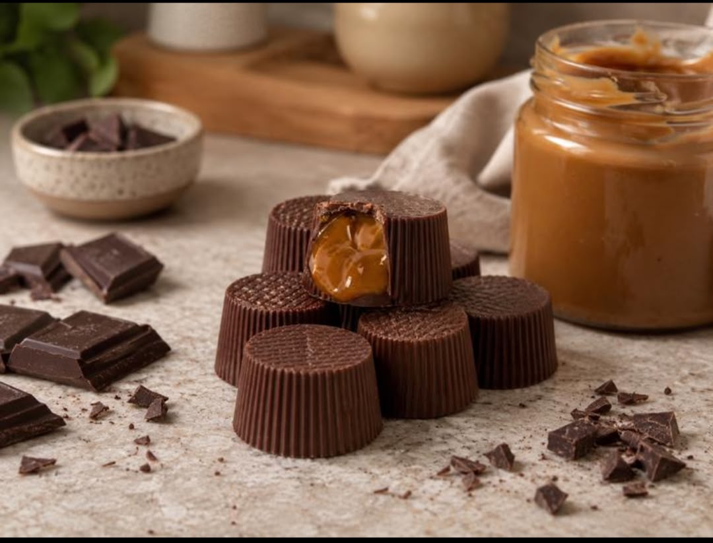

Nuestra filosofía
Queremos que cada producto de Capricho Gourmet sea más que un dulce: queremos que sea una pequeña experiencia para compartir y disfrutar.

En Capricho Gourmet creemos que los pequeños detalles pueden convertirse en momentos especiales.
Somos un espacio dedicado a la elaboración de dulces y productos de repostería preparados con dedicación, creatividad y mucho sabor.
Queremos que cada producto de Capricho Gourmet sea más que un dulce: queremos que sea una pequeña experiencia para compartir y disfrutar.
Combinamos sabores, creatividad y una presentación cuidada para crear productos que hagan de cada ocasión un momento especial.